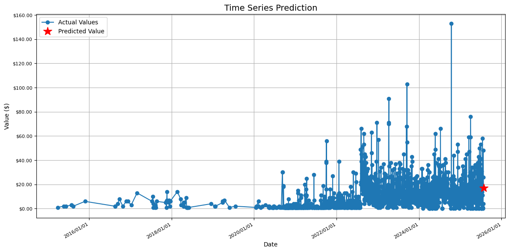
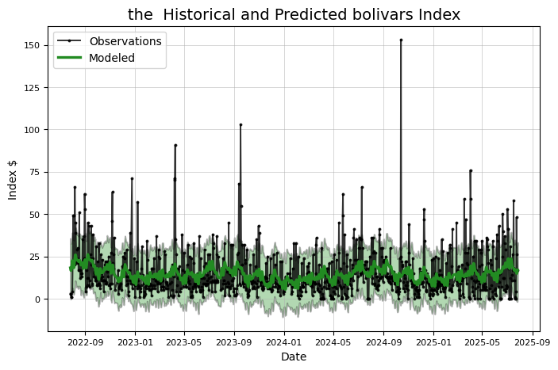

只靠每天的架次數預測的Prophet與LSTM 模型

長短期記憶神經網路
當我們在理解一件事情的時候，通常不會每次都從頭開始學習，而是透過既有的知識與記憶來理解當下遇到的問題；事件的發生通常具有連續性，也就是一連串的因果關係，或是一個持續不斷變動的結果。在機器學習模型的發展中，引入這種遞歸 (recurrent) 的概念，是遞歸神經網路與其他神經網路模型 (如 CNN) 相比，較為創新的地方。長短期記憶模型則是改善了遞歸神經網路在長期記憶上的一些不足，因為其強大的辨識能力，可以有效的對上下文產生連結，現在已大量運用在自然語言理解 (例如語音轉文字，翻譯，產生手寫文字)，圖像與影像辨識等應用。 在這邊我先不介紹LSTM的原理，因為這個專案並不是企圖改進LSTM的架構，大家只要知道他是具有理解時間關係的網路結構就可以了，既然prophet 和LSTM 都可以進行時間序列的處理 那我們就使用這兩個做個比較。
Meta Prophet 簡介：重點在於如何處理時間
Meta Prophet（全名：Facebook Prophet）是一款專門用於時間序列預測的開源工具，由 Facebook（Meta）開發。它以 Python 和 R 實作，設計目標是讓非專業統計人員也能輕鬆處理帶有季節性與節慶效應的時間序列數據。Prophet 被廣泛應用在營收、網站流量、銷售、需求等數據預測領域。
Prophet 的核心概念與架構
Prophet 將時間序列建模公式拆成三大部分： [ y(t) = g(t) + s(t) + h(t) + \epsilon_t ]
- g(t)：trend（趨勢）
- s(t)：seasonality（季節性成分）
- h(t)：holidays（節日或特殊事件）
- ε：雜訊
Prophet 處理時間的關鍵特點
1. 自動識別「時間」欄位
Prophet 要求資料有兩個欄位：
ds（datestamp，日期/時間）y（數值）
它會自動將 ds 欄位辨識為時間軸，並用它進行所有的分解與運算。
2. 趨勢（Trend）建模
Prophet 支持兩種主要趨勢建模方式：
- 線性趨勢（可設定 changepoints 轉折點）
- logistic 增長（適合有上限的數據，如市場飽和）
Prophet 會在時間軸上自動尋找可能出現轉折（changepoints）的時刻，允許趨勢在不同時期改變成長率。
3. 週期/季節性（Seasonality）
Prophet 會自動加入年、週、日等週期性成分，透過傅立葉級數進行建模。你可以手動新增更多週期（如每月），或調整週期的強度。
4. 節日/事件
你可以自訂「節日」時間清單（如農曆年、雙 11 等），Prophet 會自動在這些時間點上套用額外的預測效果（如特定天數的異常波動）。
5. 處理缺漏值與不規則間距
Prophet 可直接處理缺漏資料與不等間隔的時間序列，不需手動補齊時間軸。
6. 時間格式彈性
支援多種時間格式（日期、日期時間、timestamp），Prophet 會自動解析。
7. 可擴展未來的時間軸
你只需告訴 Prophet 要預測幾天/幾週/幾個月後的數值，它會自動根據 trend 和 seasonality 外推時間序列。
Prophet 處理時間序列的步驟（Python 範例）
import pandas as pd
from prophet import Prophet
# 資料格式要求
# df 必須包含兩個欄位：ds（日期），y（數值）
df = pd.DataFrame({
'ds': pd.date_range('2023-01-01', periods=100),
'y': [ ... ] # 你的數值
})
# 建立模型
m = Prophet()
m.fit(df)
# 預測未來 30 天
future = m.make_future_dataframe(periods=30)
forecast = m.predict(future)
# 繪圖
fig = m.plot(forecast)
Prophet vs. LSTM：時間處理方式比較總結
| 處理特點 | Prophet | LSTM |
|---|---|---|
| 1. 時間格式解析 | 自動辨識 ds 欄位的時間格式（日期、datetime、timestamp 等） |
時間需手動轉換為連續數值或標準化後的時間特徵 |
| 2. 趨勢、季節性建模 | 內建趨勢與多重季節性建模邏輯（如年、週、日）可外加節日等事件效應 | 不會自動建模趨勢與季節性，需透過大量訓練數據學出時間模式 |
| 3. 缺漏資料處理 | 可直接處理不連續與缺漏資料，不需補齊時間軸 | 缺值需事先補齊，並要求固定間距的時間序列輸入 |
| 4. 未來預測方式 | 明確定義未來時間點，自動產生未來時間序列並套用模型外推 | 需遞迴地逐步預測下一時間點，常使用前一步預測作為下一步輸入 |
| 5. 時間粒度調整 | 可輕鬆切換日、週、月等粒度 | 時間粒度需在特徵工程階段預先設計 |
| 6. 複雜性與需求 | 適合小資料量、具明顯週期性與事件驅動的商業場景 | 適合大量數據、複雜長期依賴問題（如語音、股價等非週期性應用） |
|  | ||
|  | ||
| 算出來結果差不多 | ||
| ##下面實戰 |
# -*- coding: utf-8 -*-
"""使用PROPHET 以及LSTM預測總架次數.ipynb
Automatically generated by Colab.
Original file is located at
https://colab.research.google.com/drive/1rRZQvGW2IOwRO1i1FZd_wGhz5iagkko6
"""
# @title
# 設定分割日 mday
mday = pd.to_datetime('2023-10-1')
# 建立訓練用 index 與驗證用 index
train_index = df2['ds'] < mday
test_index = df2['ds'] >= mday
# 分割輸入資料
x_train = df2[train_index]
x_test = df2[test_index]
# 分割日期資料（用於繪製圖形）
dates_test = df2['ds'][test_index]
"""### Read DATA"""
import pandas as pd
# 直接使用CSV檔案的URL
url = 'https://docs.google.com/spreadsheets/d/1hkHrnbn5oQPPHfBhiuieUzmVjsqW20XmRQWkhfWMomE/export?format=csv&id=1hkHrnbn5oQPPHfBhiuieUzmVjsqW20XmRQWkhfWMomE'
# 使用pandas讀取CSV
df = pd.read_csv(url)
# 顯示DataFrame的前幾行
df.head()
df.to_csv('calendar.csv', index=False)
import pandas as pd
# 讀取原始 CSV 檔案
df = pd.read_csv('/content/calender.csv')
# 確保日期格式正確
df['ds'] = pd.to_datetime(df['pla_aircraft_sorties'])
# 可以在這裡進行轉換，例如改欄位名稱、格式等
df.rename(columns={'pla_aircraft_sorties': 'value'}, inplace=True) # 轉為 Prophet 格式範例
df.rename(columns={'date': 'DATE'}, inplace=True) # 轉為 Prophet 格式範例
# 儲存為新的 CSV 檔案
df.to_csv('/content/output.csv', index=False)
import pandas as pd
from datetime import datetime
def convert_for_prophet(input_file, output_file):
df = pd.read_csv(input_file)
df.columns = df.columns.str.strip()
df['DATE'] = pd.to_datetime(df['DATE'])
prophet_df = pd.DataFrame()
prophet_df['ds'] = df['DATE']
prophet_df['value']=df['value']
prophet_df['ds'] = prophet_df['ds'].dt.strftime('%Y-%m-%d')
prophet_df = prophet_df.sort_values('ds')
prophet_df.to_csv(output_file, index=False)
print(f"\n Save File {output_file}")
print("\n Preview：")
print(prophet_df.head())
return prophet_df
input_file = 'output.csv'
output_file = 'DEXVZUS_out.csv'
prophet_df = convert_for_prophet(input_file, output_file)
!pip install prophet
# Quandl for financial analysis, pandas and numpy for data manipulation
# fbprophet for additive models, #pytrends for Google trend data
import pandas as pd
import numpy as np
import prophet
# matplotlib pyplot for plotting
import matplotlib.pyplot as plt
import matplotlib
# Class for analyzing and (attempting) to predict future prices
# Contains a number of visualizations and analysis methods
class Stocker():
# Initialization requires a ticker symbol
def __init__(self, price):
self.symbol = 'the '
s = price
stock = pd.DataFrame({'Date':s.index, 'y':s, 'ds':s.index, 'close':s,'open':s}, index=None)
if ('Adj. Close' not in stock.columns):
stock['Adj. Close'] = stock['close']
stock['Adj. Open'] = stock['open']
stock['y'] = stock['Adj. Close']
stock['Daily Change'] = stock['Adj. Close'] - stock['Adj. Open']
# Data assigned as class attribute
self.stock = stock.copy()
# Minimum and maximum date in range
self.min_date = min(stock['ds'])
self.max_date = max(stock['ds'])
# Find max and min prices and dates on which they occurred
self.max_price = np.max(self.stock['y'])
self.min_price = np.min(self.stock['y'])
self.min_price_date = self.stock[self.stock['y'] == self.min_price]['ds']
self.min_price_date = self.min_price_date[self.min_price_date.index[0]]
self.max_price_date = self.stock[self.stock['y'] == self.max_price]['ds']
self.max_price_date = self.max_price_date[self.max_price_date.index[0]]
# The starting price (starting with the opening price)
self.starting_price = float(self.stock['Adj. Open'].iloc[0])
# The most recent price
self.most_recent_price = float(self.stock['y'].iloc[len(self.stock) - 1])
# Whether or not to round dates
self.round_dates = True
# Number of years of data to train on
self.training_years = 3
# Prophet parameters
# Default prior from library
self.changepoint_prior_scale = 0.05
self.weekly_seasonality = False
self.daily_seasonality = False
self.monthly_seasonality = True
self.yearly_seasonality = True
self.changepoints = None
print('{} Stocker Initialized. Data covers {} to {}.'.format(self.symbol,
self.min_date,
self.max_date))
"""
Make sure start and end dates are in the range and can be
converted to pandas datetimes. Returns dates in the correct format
"""
def handle_dates(self, start_date, end_date):
# Default start and end date are the beginning and end of data
if start_date is None:
start_date = self.min_date
if end_date is None:
end_date = self.max_date
try:
# Convert to pandas datetime for indexing dataframe
start_date = pd.to_datetime(start_date)
end_date = pd.to_datetime(end_date)
except Exception as e:
print('Enter valid pandas date format.')
print(e)
return
valid_start = False
valid_end = False
# User will continue to enter dates until valid dates are met
while (not valid_start) & (not valid_end):
valid_end = True
valid_start = True
if end_date < start_date:
print('End Date must be later than start date.')
start_date = pd.to_datetime(input('Enter a new start date: '))
end_date= pd.to_datetime(input('Enter a new end date: '))
valid_end = False
valid_start = False
else:
if end_date > self.max_date:
print('End Date exceeds data range')
end_date= pd.to_datetime(input('Enter a new end date: '))
valid_end = False
if start_date < self.min_date:
print('Start Date is before date range')
start_date = pd.to_datetime(input('Enter a new start date: '))
valid_start = False
return start_date, end_date
"""
Return the dataframe trimmed to the specified range.
"""
def make_df(self, start_date, end_date, df=None):
# Default is to use the object stock data
if not df:
df = self.stock.copy()
start_date, end_date = self.handle_dates(start_date, end_date)
# keep track of whether the start and end dates are in the data
start_in = True
end_in = True
# If user wants to round dates (default behavior)
if self.round_dates:
# Record if start and end date are in df
if (start_date not in list(df['Date'])):
start_in = False
if (end_date not in list(df['Date'])):
end_in = False
# If both are not in dataframe, round both
if (not end_in) & (not start_in):
trim_df = df[(df['Date'] >= start_date) &
(df['Date'] <= end_date)]
else:
# If both are in dataframe, round neither
if (end_in) & (start_in):
trim_df = df[(df['Date'] >= start_date) &
(df['Date'] <= end_date)]
else:
# If only start is missing, round start
if (not start_in):
trim_df = df[(df['Date'] > start_date) &
(df['Date'] <= end_date)]
# If only end is imssing round end
elif (not end_in):
trim_df = df[(df['Date'] >= start_date) &
(df['Date'] < end_date)]
else:
valid_start = False
valid_end = False
while (not valid_start) & (not valid_end):
start_date, end_date = self.handle_dates(start_date, end_date)
# No round dates, if either data not in, print message and return
if (start_date in list(df['Date'])):
valid_start = True
if (end_date in list(df['Date'])):
valid_end = True
# Check to make sure dates are in the data
if (start_date not in list(df['Date'])):
print('Start Date not in data (either out of range or not a trading day.)')
start_date = pd.to_datetime(input(prompt='Enter a new start date: '))
elif (end_date not in list(df['Date'])):
print('End Date not in data (either out of range or not a trading day.)')
end_date = pd.to_datetime(input(prompt='Enter a new end date: ') )
# Dates are not rounded
trim_df = df[(df['Date'] >= start_date) &
(df['Date'] <= end_date)]
return trim_df
# Basic Historical Plots and Basic Statistics
def plot_stock(self, start_date=None, end_date=None, stats=['Adj. Close'], plot_type='basic'):
self.reset_plot()
if start_date is None:
start_date = self.min_date
if end_date is None:
end_date = self.max_date
stock_plot = self.make_df(start_date, end_date)
colors = ['r', 'b', 'g', 'y', 'c', 'm']
for i, stat in enumerate(stats):
stat_min = min(stock_plot[stat])
stat_max = max(stock_plot[stat])
stat_avg = np.mean(stock_plot[stat])
date_stat_min = stock_plot[stock_plot[stat] == stat_min]['Date']
date_stat_min = date_stat_min[date_stat_min.index[0]]
date_stat_max = stock_plot[stock_plot[stat] == stat_max]['Date']
date_stat_max = date_stat_max[date_stat_max.index[0]]
print('Maximum {} = {:.2f} on {}.'.format(stat, stat_max, date_stat_max))
print('Minimum {} = {:.2f} on {}.'.format(stat, stat_min, date_stat_min))
print('Current {} = {:.2f} on {}.\n'.format(stat, self.stock[stat].iloc[len(self.stock) - 1], self.max_date.date()))
# Percentage y-axis
if plot_type == 'pct':
# Simple Plot
plt.style.use('fivethirtyeight');
if stat == 'Daily Change':
plt.plot(stock_plot['Date'], 100 * stock_plot[stat],
color = colors[i], linewidth = 2.4, alpha = 0.9,
label = stat)
else:
plt.plot(stock_plot['Date'], 100 * (stock_plot[stat] - stat_avg) / stat_avg,
color = colors[i], linewidth = 2.4, alpha = 0.9,
label = stat)
plt.xlabel('Date'); plt.ylabel('Change Relative to Average (%)'); plt.title('%s Currency History' % self.symbol);
plt.legend(prop={'size':10})
plt.grid(color = 'k', alpha = 0.4);
# Stat y-axis
elif plot_type == 'basic':
plt.style.use('fivethirtyeight');
plt.plot(stock_plot['Date'], stock_plot[stat], color = colors[i], linewidth = 3, label = stat, alpha = 0.8)
plt.xlabel('Date'); plt.ylabel('US $'); plt.title('%s Currency History' % self.symbol);
plt.legend(prop={'size':10})
plt.grid(color = 'k', alpha = 0.4);
plt.show();
# Reset the plotting parameters to clear style formatting
# Not sure if this should be a static method
@staticmethod
def reset_plot():
# Restore default parameters
matplotlib.rcParams.update(matplotlib.rcParamsDefault)
# Adjust a few parameters to liking
matplotlib.rcParams['figure.figsize'] = (8, 5)
matplotlib.rcParams['axes.labelsize'] = 10
matplotlib.rcParams['xtick.labelsize'] = 8
matplotlib.rcParams['ytick.labelsize'] = 8
matplotlib.rcParams['axes.titlesize'] = 14
matplotlib.rcParams['text.color'] = 'k'
# Method to linearly interpolate prices on the weekends
def resample(self, dataframe):
# Change the index and resample at daily level
dataframe = dataframe.set_index('ds')
dataframe = dataframe.resample('D')
# Reset the index and interpolate nan values
dataframe = dataframe.reset_index(level=0)
dataframe = dataframe.interpolate()
return dataframe
# Remove weekends from a dataframe
def remove_weekends(self, dataframe):
# Reset index to use ix
dataframe = dataframe.reset_index(drop=True)
weekends = []
# Find all of the weekends
for i, date in enumerate(dataframe['ds']):
if (date.weekday()) == 5 | (date.weekday() == 6):
weekends.append(i)
# Drop the weekends
dataframe = dataframe.drop(weekends, axis=0)
return dataframe
# Calculate and plot profit from buying and holding shares for specified date range
def buy_and_hold(self, start_date=None, end_date=None, nshares=1):
self.reset_plot()
start_date, end_date = self.handle_dates(start_date, end_date)
# Find starting and ending price of stock
start_price = float(self.stock[self.stock['Date'] == start_date]['Adj. Open'])
end_price = float(self.stock[self.stock['Date'] == end_date]['Adj. Close'])
# Make a profit dataframe and calculate profit column
profits = self.make_df(start_date, end_date)
profits['hold_profit'] = nshares * (profits['Adj. Close'] - start_price)
# Total profit
total_hold_profit = nshares * (end_price - start_price)
print('{} Total buy and hold profit from {} to {} for {} shares = ${:.2f}'.format
(self.symbol, start_date, end_date, nshares, total_hold_profit))
# Plot the total profits
plt.style.use('dark_background')
# Location for number of profit
text_location = (end_date - pd.DateOffset(months = 1))
# Plot the profits over time
plt.plot(profits['Date'], profits['hold_profit'], 'b', linewidth = 3)
plt.ylabel('Profit ($)'); plt.xlabel('Date'); plt.title('Buy and Hold Profits for {} {} to {}'.format(
self.symbol, start_date, end_date))
# Display final value on graph
plt.text(x = text_location,
y = total_hold_profit + (total_hold_profit / 40),
s = '$%d' % total_hold_profit,
color = 'g' if total_hold_profit > 0 else 'r',
size = 14)
plt.grid(alpha=0.2)
plt.show();
# Create a prophet model without training
def create_model(self):
# Make the model
model = prophet.Prophet(daily_seasonality=self.daily_seasonality,
weekly_seasonality=self.weekly_seasonality,
yearly_seasonality=self.yearly_seasonality,
changepoint_prior_scale=self.changepoint_prior_scale,
changepoints=self.changepoints)
if self.monthly_seasonality:
# Add monthly seasonality
model.add_seasonality(name = 'monthly', period = 30.5, fourier_order = 5)
return model
# Graph the effects of altering the changepoint prior scale (cps)
def changepoint_prior_analysis(self, changepoint_priors=[0.001, 0.05, 0.1, 0.2], colors=['b', 'r', 'grey', 'gold']):
# Training and plotting with specified years of data
train = self.stock[(self.stock['Date'] > (max(self.stock['Date']
) - pd.DateOffset(years=self.training_years)))]
# Iterate through all the changepoints and make models
for i, prior in enumerate(changepoint_priors):
# Select the changepoint
self.changepoint_prior_scale = prior
# Create and train a model with the specified cps
model = self.create_model()
model.fit(train)
future = model.make_future_dataframe(periods=180, freq='D')
# Make a dataframe to hold predictions
if i == 0:
predictions = future.copy()
future = model.predict(future)
# Fill in prediction dataframe
predictions['%.3f_yhat_upper' % prior] = future['yhat_upper']
predictions['%.3f_yhat_lower' % prior] = future['yhat_lower']
predictions['%.3f_yhat' % prior] = future['yhat']
# Remove the weekends
predictions = self.remove_weekends(predictions)
# Plot set-up
self.reset_plot()
plt.style.use('fivethirtyeight')
fig, ax = plt.subplots(1, 1)
# Actual observations
ax.plot(train['ds'], train['y'], 'ko', ms = 4, label = 'Observations')
color_dict = {prior: color for prior, color in zip(changepoint_priors, colors)}
# Plot each of the changepoint predictions
for prior in changepoint_priors:
# Plot the predictions themselves
ax.plot(predictions['ds'], predictions['%.3f_yhat' % prior], linewidth = 1.2,
color = color_dict[prior], label = '%.3f prior scale' % prior)
# Plot the uncertainty interval
ax.fill_between(predictions['ds'].dt.to_pydatetime(), predictions['%.3f_yhat_upper' % prior],
predictions['%.3f_yhat_lower' % prior], facecolor = color_dict[prior],
alpha = 0.3, edgecolor = 'k', linewidth = 0.6)
# Plot labels
plt.legend(loc = 2, prop={'size': 10})
plt.xlabel('Date'); plt.ylabel('Stock Price ($)'); plt.title('Effect of Changepoint Prior Scale');
plt.show()
# Basic prophet model for specified number of days
def create_prophet_model(self, days=0, resample=False):
self.reset_plot()
model = self.create_model()
# Fit on the stock history for self.training_years number of years
stock_history = self.stock[self.stock['Date'] > (self.max_date -
pd.DateOffset(years = self.training_years))]
if resample:
stock_history = self.resample(stock_history)
model.fit(stock_history)
# Make and predict for next year with future dataframe
future = model.make_future_dataframe(periods = days, freq='D')
future = model.predict(future)
if days > 0:
# Print the predicted price
predicted_date = future['ds'].iloc[-1]
predicted_value = future['yhat'].iloc[-1]
print('Predicted Index on {} = ${:.2f}'.format(predicted_date, predicted_value))
title = '%s Historical and Predicted bolivars Index' % self.symbol
else:
title = '%s Historical and Modeled bolivars Index' % self.symbol
# Set up the plot
fig, ax = plt.subplots(1, 1)
# Plot the actual values
ax.plot(stock_history['ds'], stock_history['y'], 'ko-', linewidth = 1.4, alpha = 0.8, ms = 1.8, label = 'Observations')
# Plot the predicted values
ax.plot(future['ds'], future['yhat'], 'forestgreen',linewidth = 2.4, label = 'Modeled');
# Plot the uncertainty interval as ribbon
ax.fill_between(np.array(future['ds'].dt.to_pydatetime()),
future['yhat_upper'],
future['yhat_lower'],
alpha=0.3, facecolor='g', edgecolor='k', linewidth=1.4)
# Plot formatting
plt.legend(loc = 2, prop={'size': 10}); plt.xlabel('Date'); plt.ylabel('Index $');
plt.grid(linewidth=0.6, alpha = 0.6)
plt.title(title);
plt.show()
return model, future
# Evaluate prediction model for one year
def evaluate_prediction(self, start_date=None, end_date=None, nshares = None):
# Default start date is one year before end of data
# Default end date is end date of data
if start_date is None:
start_date = self.max_date - pd.DateOffset(years=1)
if end_date is None:
end_date = self.max_date
start_date, end_date = self.handle_dates(start_date, end_date)
# Training data starts self.training_years years before start date and goes up to start date
train = self.stock[(self.stock['Date'] < start_date) &
(self.stock['Date'] > (start_date - pd.DateOffset(years=self.training_years)))]
# Testing data is specified in the range
test = self.stock[(self.stock['Date'] >= start_date) & (self.stock['Date'] <= end_date)]
# Create and train the model
model = self.create_model()
model.fit(train)
# Make a future dataframe and predictions
future = model.make_future_dataframe(periods = 365, freq='D')
future = model.predict(future)
# Merge predictions with the known values
test = pd.merge(test, future, on = 'ds', how = 'inner')
train = pd.merge(train, future, on = 'ds', how = 'inner')
# Calculate the differences between consecutive measurements
test['pred_diff'] = test['yhat'].diff()
test['real_diff'] = test['y'].diff()
# Correct is when we predicted the correct direction
test['correct'] = (np.sign(test['pred_diff']) == np.sign(test['real_diff'])) * 1
# Accuracy when we predict increase and decrease
increase_accuracy = 100 * np.mean(test[test['pred_diff'] > 0]['correct'])
decrease_accuracy = 100 * np.mean(test[test['pred_diff'] < 0]['correct'])
# Calculate mean absolute error
test_errors = abs(test['y'] - test['yhat'])
test_mean_error = np.mean(test_errors)
train_errors = abs(train['y'] - train['yhat'])
train_mean_error = np.mean(train_errors)
# Calculate percentage of time actual value within prediction range
test['in_range'] = False
for i in test.index:
if (test['y'].iloc[i] < test['yhat_upper'].iloc[i]) & (test['y'].iloc[i] > test['yhat_lower'].iloc[i]):
test['in_range'].iloc[i] = True
in_range_accuracy = 100 * np.mean(test['in_range'])
if not nshares:
# Date range of predictions
print('\nPrediction Range: {} to {}.'.format(start_date,
end_date))
# Final prediction vs actual value
print('\nPredicted price on {} = ${:.2f}.'.format(max(future['ds']), future['yhat'].iloc[len(future) - 1]))
print('Actual price on {} = ${:.2f}.\n'.format(max(test['ds']), test['y'].iloc[len(test) - 1]))
print('Average Absolute Error on Training Data = ${:.2f}.'.format(train_mean_error))
print('Average Absolute Error on Testing Data = ${:.2f}.\n'.format(test_mean_error))
# Direction accuracy
print('When the model predicted an increase, the price increased {:.2f}% of the time.'.format(increase_accuracy))
print('When the model predicted a decrease, the price decreased {:.2f}% of the time.\n'.format(decrease_accuracy))
print('The actual value was within the {:d}% confidence interval {:.2f}% of the time.'.format(int(100 * model.interval_width), in_range_accuracy))
# Reset the plot
self.reset_plot()
# Set up the plot
fig, ax = plt.subplots(1, 1)
# Plot the actual values
ax.plot(train['ds'], train['y'], 'ko-', linewidth = 1.4, alpha = 0.8, ms = 1.8, label = 'Observations')
ax.plot(test['ds'], test['y'], 'ko-', linewidth = 1.4, alpha = 0.8, ms = 1.8, label = 'Observations')
# Plot the predicted values
ax.plot(future['ds'], future['yhat'], 'navy', linewidth = 2.4, label = 'Predicted');
# Plot the uncertainty interval as ribbon
ax.fill_between(future['ds'].dt.to_pydatetime(), future['yhat_upper'], future['yhat_lower'], alpha = 0.6,
facecolor = 'gold', edgecolor = 'k', linewidth = 1.4, label = 'Confidence Interval')
# Put a vertical line at the start of predictions
plt.vlines(x=min(test['ds']), ymin=min(future['yhat_lower']), ymax=max(future['yhat_upper']), colors = 'r',
linestyles='dashed', label = 'Prediction Start')
# Plot formatting
plt.legend(loc = 2, prop={'size': 8}); plt.xlabel('Date'); plt.ylabel('Price $');
plt.grid(linewidth=0.6, alpha = 0.6)
plt.title('{} Model Evaluation from {} to {}.'.format(self.symbol,
start_date, end_date));
plt.show();
# If a number of shares is specified, play the game
elif nshares:
# Only playing the stocks when we predict the stock will increase
test_pred_increase = test[test['pred_diff'] > 0]
test_pred_increase.reset_index(inplace=True)
prediction_profit = []
# Iterate through all the predictions and calculate profit from playing
for i, correct in enumerate(test_pred_increase['correct']):
# If we predicted up and the price goes up, we gain the difference
if correct == 1:
prediction_profit.append(nshares * test_pred_increase['real_diff'].iloc[i])
# If we predicted up and the price goes down, we lose the difference
else:
prediction_profit.append(nshares * test_pred_increase['real_diff'].iloc[i])
test_pred_increase['pred_profit'] = prediction_profit
# Put the profit into the test dataframe
test = pd.merge(test, test_pred_increase[['ds', 'pred_profit']], on = 'ds', how = 'left')
test['pred_profit'].iloc[0] = 0
# Profit for either method at all dates
test['pred_profit'] = test['pred_profit'].cumsum().ffill()
test['hold_profit'] = nshares * (test['y'] - float(test['y'].iloc[0]))
# Display information
print('You played the stock market in {} from {} to {} with {} shares.\n'.format(
self.symbol, start_date, end_date, nshares))
print('When the model predicted an increase, the price increased {:.2f}% of the time.'.format(increase_accuracy))
print('When the model predicted a decrease, the price decreased {:.2f}% of the time.\n'.format(decrease_accuracy))
# Display some friendly information about the perils of playing the stock market
print('The total profit using the Prophet model = ${:.2f}.'.format(np.sum(prediction_profit)))
print('The Buy and Hold strategy profit = ${:.2f}.'.format(float(test['hold_profit'].iloc[len(test) - 1])))
print('\nThanks for playing the stock market!\n')
# Plot the predicted and actual profits over time
self.reset_plot()
# Final profit and final smart used for locating text
final_profit = test['pred_profit'].iloc[len(test) - 1]
final_smart = test['hold_profit'].iloc[len(test) - 1]
# text location
last_date = test['ds'].iloc[len(test) - 1]
text_location = (last_date - pd.DateOffset(months = 1))
plt.style.use('dark_background')
# Plot smart profits
plt.plot(test['ds'], test['hold_profit'], 'b',
linewidth = 1.8, label = 'Buy and Hold Strategy')
# Plot prediction profits
plt.plot(test['ds'], test['pred_profit'],
color = 'g' if final_profit > 0 else 'r',
linewidth = 1.8, label = 'Prediction Strategy')
# Display final values on graph
plt.text(x = text_location,
y = final_profit + (final_profit / 40),
s = '$%d' % final_profit,
color = 'g' if final_profit > 0 else 'r',
size = 18)
plt.text(x = text_location,
y = final_smart + (final_smart / 40),
s = '$%d' % final_smart,
color = 'g' if final_smart > 0 else 'r',
size = 18);
# Plot formatting
plt.ylabel('Profit (US $)'); plt.xlabel('Date');
plt.title('Predicted versus Buy and Hold Profits');
plt.legend(loc = 2, prop={'size': 10});
plt.grid(alpha=0.2);
plt.show()
def retrieve_google_trends(self, search, date_range):
# Set up the trend fetching object
pytrends = TrendReq(hl='en-US', tz=360)
kw_list = [search]
try:
# Create the search object
pytrends.build_payload(kw_list, cat=0, timeframe=date_range[0], geo='', gprop='news')
# Retrieve the interest over time
trends = pytrends.interest_over_time()
related_queries = pytrends.related_queries()
except Exception as e:
print('\nGoogle Search Trend retrieval failed.')
print(e)
return
return trends, related_queries
def changepoint_date_analysis(self, search=None):
self.reset_plot()
model = self.create_model()
# Use past self.training_years years of data
train = self.stock[self.stock['Date'] > (self.max_date - pd.DateOffset(years = self.training_years))]
model.fit(train)
# Predictions of the training data (no future periods)
future = model.make_future_dataframe(periods=0, freq='D')
future = model.predict(future)
train = pd.merge(train, future[['ds', 'yhat']], on = 'ds', how = 'inner')
changepoints = model.changepoints
train = train.reset_index(drop=True)
# Create dataframe of only changepoints
change_indices = []
for changepoint in (changepoints):
change_indices.append(train[train['ds'] == changepoint].index[0])
c_data = train.iloc[change_indices, :]
deltas = model.params['delta'][0]
c_data['delta'] = deltas
c_data['abs_delta'] = abs(c_data['delta'])
# Sort the values by maximum change
c_data = c_data.sort_values(by='abs_delta', ascending=False)
# Limit to 10 largest changepoints
c_data = c_data[:10]
# Separate into negative and positive changepoints
cpos_data = c_data[c_data['delta'] > 0]
cneg_data = c_data[c_data['delta'] < 0]
# Changepoints and data
if not search:
print('\nChangepoints sorted by slope rate of change (2nd derivative):\n')
print(c_data[['Date', 'Adj. Close', 'delta']][:5])
# Line plot showing actual values, estimated values, and changepoints
self.reset_plot()
# Set up line plot
plt.plot(train['ds'], train['y'], 'ko', ms = 4, label = 'Stock Price')
plt.plot(future['ds'], future['yhat'], color = 'navy', linewidth = 2.0, label = 'Modeled')
# Changepoints as vertical lines
plt.vlines(cpos_data['ds'].dt.to_pydatetime(), ymin = min(train['y']), ymax = max(train['y']),
linestyles='dashed', color = 'r',
linewidth= 1.2, label='Negative Changepoints')
plt.vlines(cneg_data['ds'].dt.to_pydatetime(), ymin = min(train['y']), ymax = max(train['y']),
linestyles='dashed', color = 'darkgreen',
linewidth= 1.2, label='Positive Changepoints')
plt.legend(prop={'size':10});
plt.xlabel('Date'); plt.ylabel('Price ($)'); plt.title('Stock Price with Changepoints')
plt.show()
# Search for search term in google news
# Show related queries, rising related queries
# Graph changepoints, search frequency, stock price
if search:
date_range = ['%s %s' % (str(min(train['Date'])), str(max(train['Date'])))]
# Get the Google Trends for specified terms and join to training dataframe
trends, related_queries = self.retrieve_google_trends(search, date_range)
if (trends is None) or (related_queries is None):
print('No search trends found for %s' % search)
return
print('\n Top Related Queries: \n')
print(related_queries[search]['top'].head())
print('\n Rising Related Queries: \n')
print(related_queries[search]['rising'].head())
# Upsample the data for joining with training data
trends = trends.resample('D')
trends = trends.reset_index(level=0)
trends = trends.rename(columns={'date': 'ds', search: 'freq'})
# Interpolate the frequency
trends['freq'] = trends['freq'].interpolate()
# Merge with the training data
train = pd.merge(train, trends, on = 'ds', how = 'inner')
# Normalize values
train['y_norm'] = train['y'] / max(train['y'])
train['freq_norm'] = train['freq'] / max(train['freq'])
self.reset_plot()
# Plot the normalized stock price and normalize search frequency
plt.plot(train['ds'], train['y_norm'], 'k-', label = 'Stock Price')
plt.plot(train['ds'], train['freq_norm'], color='goldenrod', label = 'Search Frequency')
# Changepoints as vertical lines
plt.vlines(cpos_data['ds'].dt.to_pydatetime(), ymin = 0, ymax = 1,
linestyles='dashed', color = 'r',
linewidth= 1.2, label='Negative Changepoints')
plt.vlines(cneg_data['ds'].dt.to_pydatetime(), ymin = 0, ymax = 1,
linestyles='dashed', color = 'darkgreen',
linewidth= 1.2, label='Positive Changepoints')
# Plot formatting
plt.legend(prop={'size': 10})
plt.xlabel('Date'); plt.ylabel('Normalized Values'); plt.title('%s Stock Price and Search Frequency for %s' % (self.symbol, search))
plt.show()
# Predict the future price for a given range of days
def predict_future(self, days=30):
# Use past self.training_years years for training
train = self.stock[self.stock['Date'] > (max(self.stock['Date']
) - pd.DateOffset(years=self.training_years))]
model = self.create_model()
model.fit(train)
# Future dataframe with specified number of days to predict
future = model.make_future_dataframe(periods=days, freq='D')
future = model.predict(future)
# Only concerned with future dates
future = future[future['ds'] >= max(self.stock['Date'])]
# Remove the weekends
future = self.remove_weekends(future)
# Calculate whether increase or not
future['diff'] = future['yhat'].diff()
future = future.dropna()
# Find the prediction direction and create separate dataframes
future['direction'] = (future['diff'] > 0) * 1
# Rename the columns for presentation
future = future.rename(columns={'ds': 'Date', 'yhat': 'estimate', 'diff': 'change',
'yhat_upper': 'upper', 'yhat_lower': 'lower'})
future_increase = future[future['direction'] == 1]
future_decrease = future[future['direction'] == 0]
# Print out the dates
print('\nPredicted Increase: \n')
print(future_increase[['Date', 'estimate', 'change', 'upper', 'lower']])
print('\nPredicted Decrease: \n')
print(future_decrease[['Date', 'estimate', 'change', 'upper', 'lower']])
self.reset_plot()
# Set up plot
plt.style.use('fivethirtyeight')
matplotlib.rcParams['axes.labelsize'] = 10
matplotlib.rcParams['xtick.labelsize'] = 8
matplotlib.rcParams['ytick.labelsize'] = 8
matplotlib.rcParams['axes.titlesize'] = 12
# Plot the predictions and indicate if increase or decrease
fig, ax = plt.subplots(1, 1, figsize=(8, 6))
# Plot the estimates
ax.plot(future_increase['Date'], future_increase['estimate'], 'g^', ms = 12, label = 'Pred. Increase')
ax.plot(future_decrease['Date'], future_decrease['estimate'], 'rv', ms = 12, label = 'Pred. Decrease')
# Plot errorbars
ax.errorbar(future['Date'].dt.to_pydatetime(), future['estimate'],
yerr = future['upper'] - future['lower'],
capthick=1.4, color = 'k',linewidth = 2,
ecolor='darkblue', capsize = 4, elinewidth = 1, label = 'Pred with Range')
# Plot formatting
plt.legend(loc = 2, prop={'size': 10});
plt.xticks(rotation = '45')
plt.ylabel('Predicted Price (US $)');
plt.xlabel('Date'); plt.title('Predictions for %s' % self.symbol);
plt.show()
def changepoint_prior_validation(self, start_date=None, end_date=None,changepoint_priors = [0.001, 0.05, 0.1, 0.2]):
# Default start date is two years before end of data
# Default end date is one year before end of data
if start_date is None:
start_date = self.max_date - pd.DateOffset(years=2)
if end_date is None:
end_date = self.max_date - pd.DateOffset(years=1)
# Convert to pandas datetime for indexing dataframe
start_date = pd.to_datetime(start_date)
end_date = pd.to_datetime(end_date)
start_date, end_date = self.handle_dates(start_date, end_date)
# Select self.training_years number of years
train = self.stock[(self.stock['Date'] > (start_date - pd.DateOffset(years=self.training_years))) &
(self.stock['Date'] < start_date)]
# Testing data is specified by range
test = self.stock[(self.stock['Date'] >= start_date) & (self.stock['Date'] <= end_date)]
eval_days = (max(test['Date']) - min(test['Date'])).days
results = pd.DataFrame(0, index = list(range(len(changepoint_priors))),
columns = ['cps', 'train_err', 'train_range', 'test_err', 'test_range'])
print('\nValidation Range {} to {}.\n'.format(min(test['Date']),
max(test['Date'])))
# Iterate through all the changepoints and make models
for i, prior in enumerate(changepoint_priors):
results['cps'].iloc[i] = prior
# Select the changepoint
self.changepoint_prior_scale = prior
# Create and train a model with the specified cps
model = self.create_model()
model.fit(train)
future = model.make_future_dataframe(periods=eval_days, freq='D')
future = model.predict(future)
# Training results and metrics
train_results = pd.merge(train, future[['ds', 'yhat', 'yhat_upper', 'yhat_lower']], on = 'ds', how = 'inner')
avg_train_error = np.mean(abs(train_results['y'] - train_results['yhat']))
avg_train_uncertainty = np.mean(abs(train_results['yhat_upper'] - train_results['yhat_lower']))
results['train_err'].iloc[i] = avg_train_error
results['train_range'].iloc[i] = avg_train_uncertainty
# Testing results and metrics
test_results = pd.merge(test, future[['ds', 'yhat', 'yhat_upper', 'yhat_lower']], on = 'ds', how = 'inner')
avg_test_error = np.mean(abs(test_results['y'] - test_results['yhat']))
avg_test_uncertainty = np.mean(abs(test_results['yhat_upper'] - test_results['yhat_lower']))
results['test_err'].iloc[i] = avg_test_error
results['test_range'].iloc[i] = avg_test_uncertainty
print(results)
# Plot of training and testing average errors
self.reset_plot()
plt.plot(results['cps'], results['train_err'], 'bo-', ms = 8, label = 'Train Error')
plt.plot(results['cps'], results['test_err'], 'r*-', ms = 8, label = 'Test Error')
plt.xlabel('Changepoint Prior Scale'); plt.ylabel('Avg. Absolute Error ($)');
plt.title('Training and Testing Curves as Function of CPS')
plt.grid(color='k', alpha=0.3)
plt.xticks(results['cps'], results['cps'])
plt.legend(prop={'size':10})
plt.show();
# Plot of training and testing average uncertainty
self.reset_plot()
plt.plot(results['cps'], results['train_range'], 'bo-', ms = 8, label = 'Train Range')
plt.plot(results['cps'], results['test_range'], 'r*-', ms = 8, label = 'Test Range')
plt.xlabel('Changepoint Prior Scale'); plt.ylabel('Avg. Uncertainty ($)');
plt.title('Uncertainty in Estimate as Function of CPS')
plt.grid(color='k', alpha=0.3)
plt.xticks(results['cps'], results['cps'])
plt.legend(prop={'size':10})
plt.show();
import pandas as pd
# 讀入資料
df = pd.read_csv('/content/DEXVZUS_out.csv', index_col='ds', parse_dates=['ds'])
# 先用中位數補齊 NaN（每欄各自補自己的中位數）
df_filled = df.fillna(df.median(numeric_only=True))
# 再執行 squeeze（若只有一欄，才會變成 Series）
price = df_filled.squeeze()
# 檢查結果
print(price.tail())
DEXVZUS= Stocker(price)
model, model_data = DEXVZUS.create_prophet_model(days=1 )
import numpy as np
import pandas as pd
from sklearn.preprocessing import MinMaxScaler
from tensorflow.keras.models import Sequential
from tensorflow.keras.layers import LSTM, Dense, Dropout
import matplotlib.pyplot as plt
import matplotlib.dates as mdates
# Prepare data
df = pd.read_csv('output.csv') # Replace with your actual data loading method
df['DATE'] = pd.to_datetime(df['DATE'])
df = df.rename(columns={'DATE': 'date', 'value': 'value'})
# Create lag features (滯後特徵)
def create_lag_features(data, lag=1):
lagged_data = data.copy()
for i in range(1, lag+1):
lagged_data[f'lag_{i}'] = lagged_data['value'].shift(i)
return lagged_data.dropna()
# Create lag features (加入前幾天的價格)
lag = 3 # Use last 3 days to predict
df_lagged = create_lag_features(df, lag)
# Scale the data
scaler = MinMaxScaler()
values_scaled = scaler.fit_transform(df_lagged['value'].values.reshape(-1, 1))
# Create sequences for LSTM
def create_sequences(data, seq_length):
X, y = [], []
for i in range(len(data) - seq_length):
X.append(data[i:(i + seq_length)])
y.append(data[i + seq_length])
return np.array(X), np.array(y)
# Create sequences
seq_length = 12 # Using 12 months of data to predict next month
X, y = create_sequences(values_scaled, seq_length)
# Split data into train and test sets
train_size = int(len(X) * 0.8)
X_train, X_test = X[:train_size], X[train_size:]
y_train, y_test = y[:train_size], y[train_size:]
# Create the LSTM model with modified architecture
model = Sequential([
LSTM(50, return_sequences=True, input_shape=(seq_length, 1)),
Dropout(0.3), # Increased Dropout to avoid overfitting
LSTM(50, return_sequences=False),
Dropout(0.3),
Dense(25, activation='relu'),
Dense(1, activation='relu') # 使用 relu 確保輸出為正數
])
# Compile the model with different optimizer settings
model.compile(optimizer='adam', loss='mse')
# Train the model with more epochs and validation split
history = model.fit(
X_train,
y_train,
epochs=50, # Increased epochs for better training
batch_size=32,
validation_split=0.1,
verbose=1
)
# Predict for 2025/1/8
future_date = pd.Timestamp('2025-07-27')
last_sequence = values_scaled[-seq_length:]
last_sequence = last_sequence.reshape(1, seq_length, 1)
future_pred_scaled = model.predict(last_sequence)
future_pred = scaler.inverse_transform(future_pred_scaled)
print(f'Predicted value for 2025/1/8: ${future_pred[0][0]:,.2f}')
# Plot with enhanced date formatting
plt.figure(figsize=(12, 6))
plt.plot(df['date'], df['value'], label='Actual Values', marker='o')
plt.plot(future_date, future_pred[0][0], 'r*', markersize=15, label='Predicted Value')
# Format x-axis to show dates in YYYY/MM/DD format
plt.gca().xaxis.set_major_formatter(mdates.DateFormatter('%Y/%m/%d'))
plt.gcf().autofmt_xdate() # Rotate and align the tick labels
plt.title('Time Series Prediction')
plt.xlabel('Date')
plt.ylabel('Value ($)')
plt.legend()
plt.grid(True)
# Format y-axis to show dollar values
plt.gca().yaxis.set_major_formatter(plt.FuncFormatter(lambda x, p: f'${x:,.2f}'))
print(f'Predicted value for 2025/1/8: ${future_pred[0][0]:,.2f}')
print(f'Actual value: $369,980.57')
print(f'Absolute error: ${abs(future_pred[0][0] - 369980.57):,.2f}')
print(f'Relative error: {abs(future_pred[0][0] - 369980.57)/369980.57*100:.2f}%')
plt.tight_layout()
plt.show()